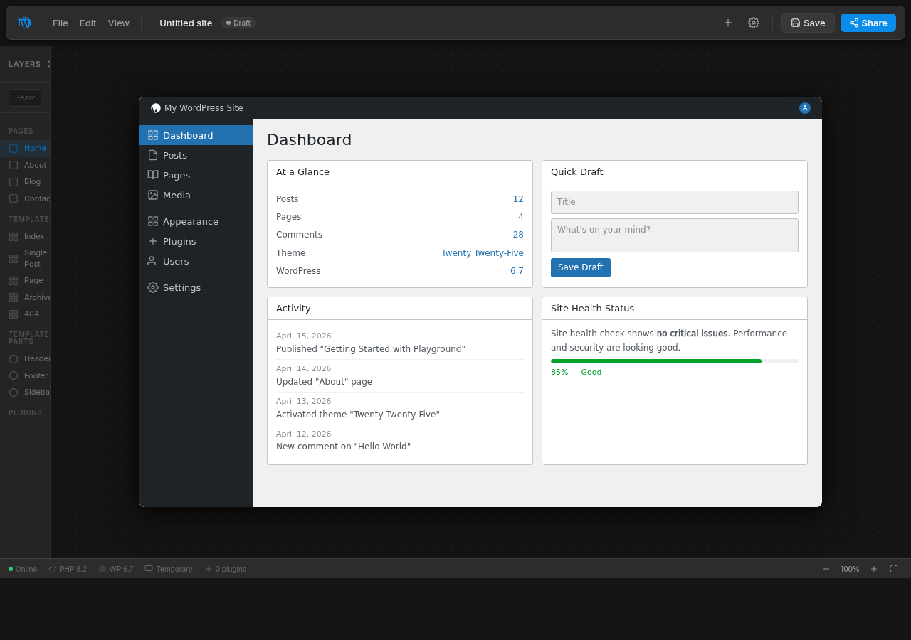
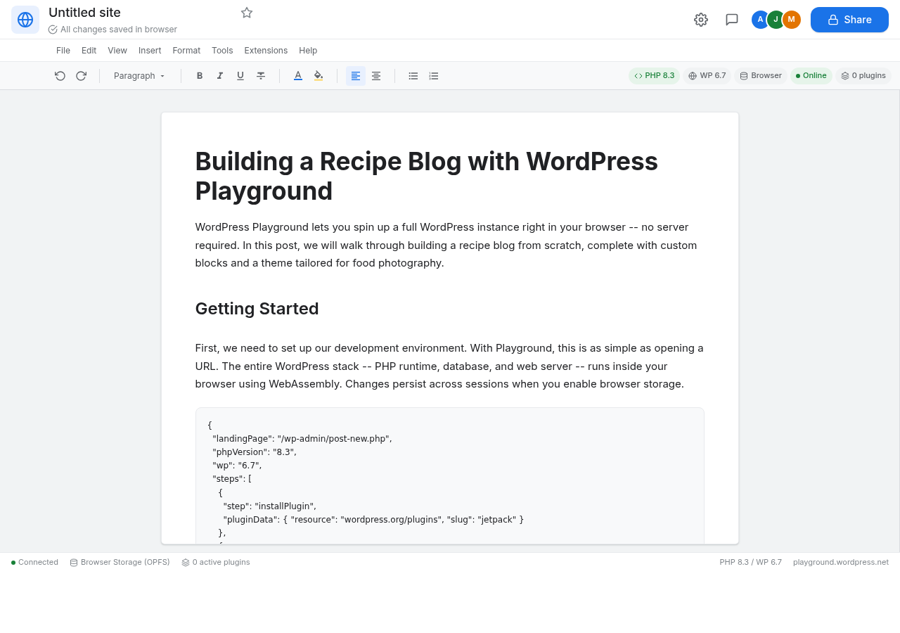
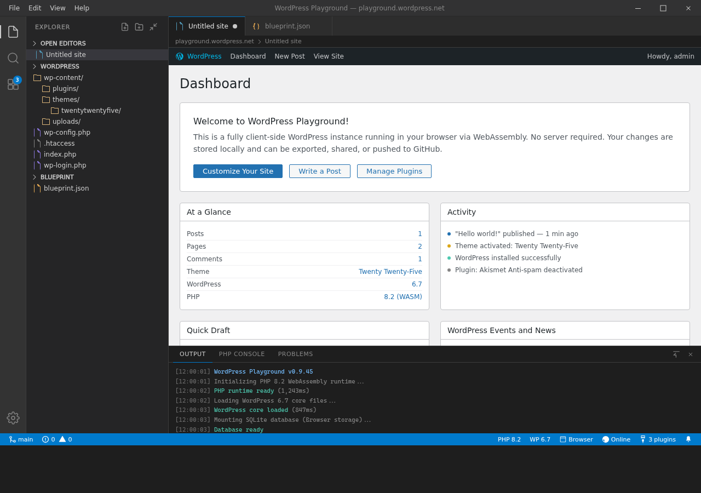

Three product-grade directions for redesigning playground.wordpress.net, each inspired by a distinct real-world product.

Figma-inspired mockup';">Floating toolbar, inspector panel, canvas metaphor. Settings in a right-side panel with tabs. Draft badge and dot-grid canvas. Great for users who think of their WordPress setup as a designable artifact.

Google Docs-inspired mockup';">Clean document-centered layout with autosave indicator, menu bar, toolbar ribbon, and blue Share button. Slash commands for plugin install. Settings in a right sidebar panel.

VS Code-inspired mockup';">Activity bar, file tabs with unsaved dot, command palette, and status bar. Extensions panel for plugins. Settings as a tab. Keyboard-driven workflow with information-dense chrome.